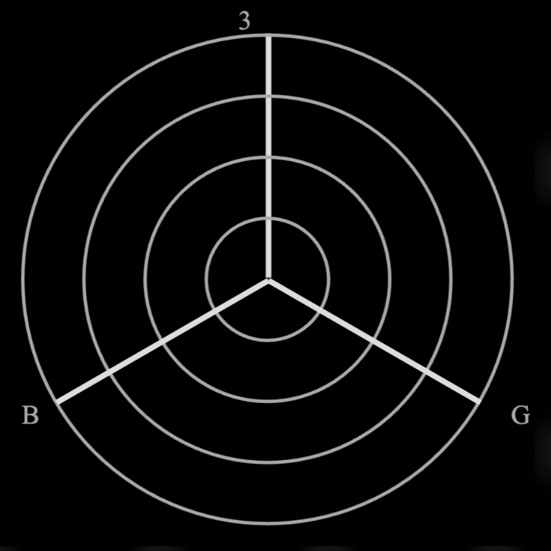

An Interactive Zine
A collaborative experiment in visual self-expression, created by trans people—for when language and identities don’t give the full picture. Users can create gender charts that reflect how they understand and feel their gender, and add them to a growing collection of gender charts.
Goals
• Celebrate trans creativity by giving people tools to visually express their gender outside of language.
• Build a living archive of gender charts.
• Explore the nuances of labels by analyzing the similarities and differences between people with the same identities and their intersections.

The chart is comprised of 3 axis.
The circles represent percentages. The center is 0%, the first circle is 25%, 50%, 75%, 100%
You can feel as much or as little gender as you wish. It doesn’t need to add up to 100.

Once you’re ready, click "Design Your Gender" to begin!